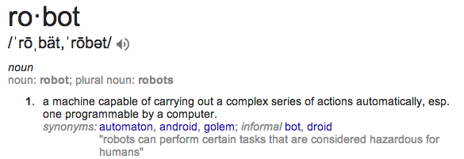
wow
such precison
very smoov
much accurate
wow
meow
whut?
CPU
Arduino

Specialty Arduino
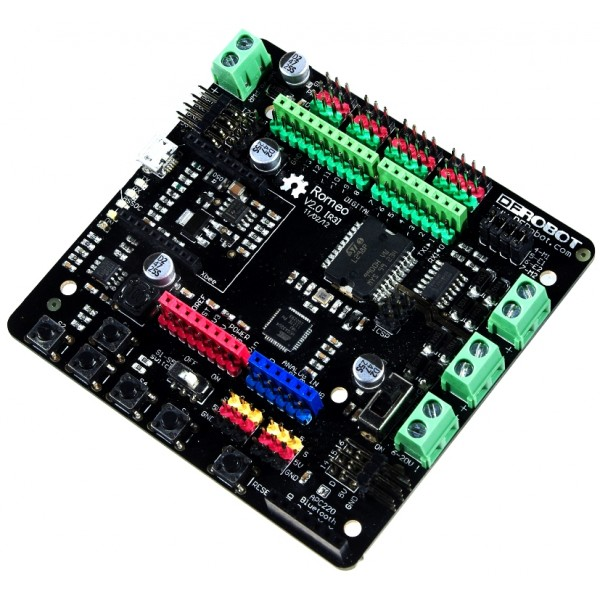
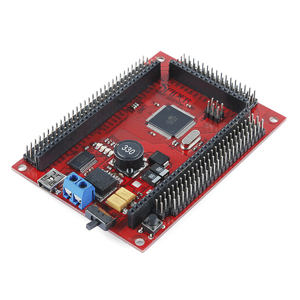
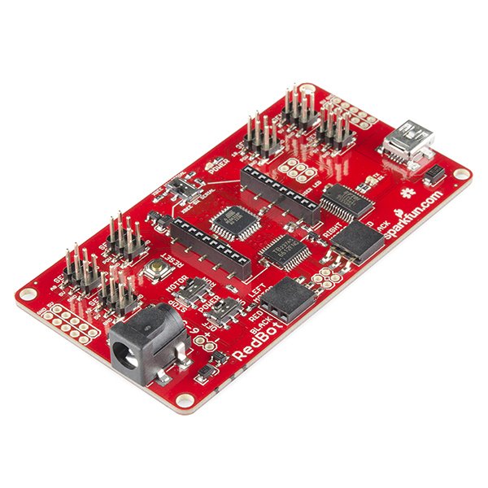
Parallax
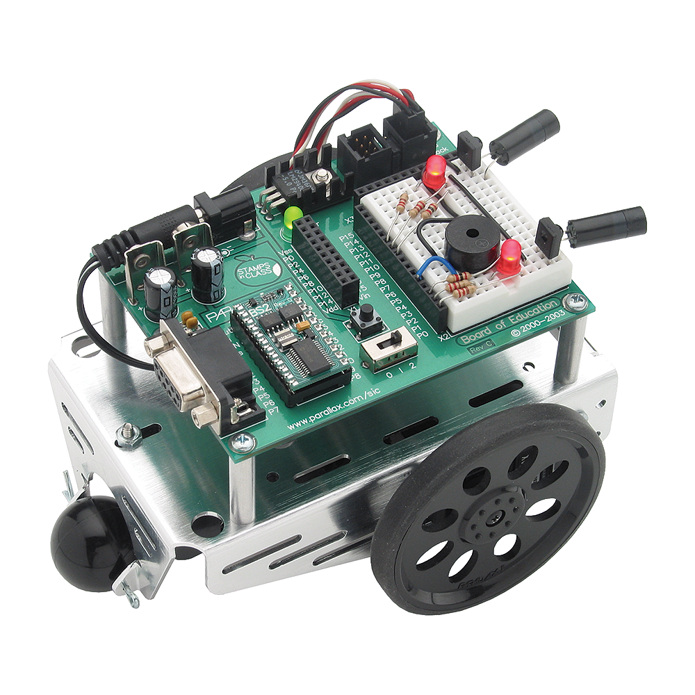
Raspberry Pi

BeagleBone
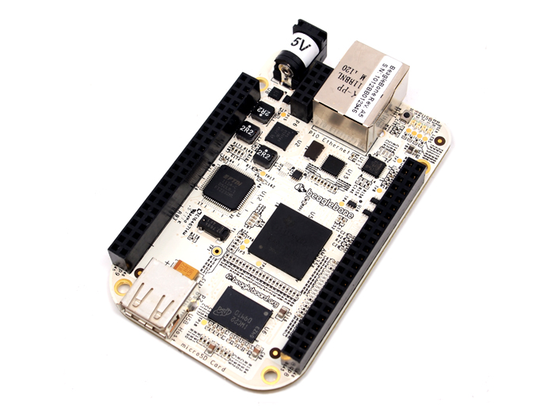
Mindstorm
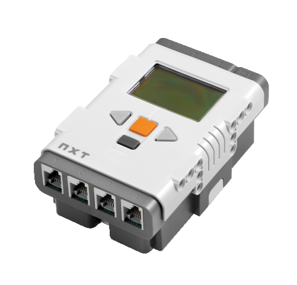
Upcoming
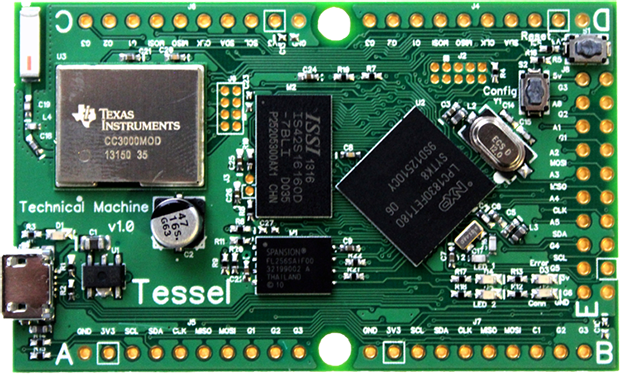
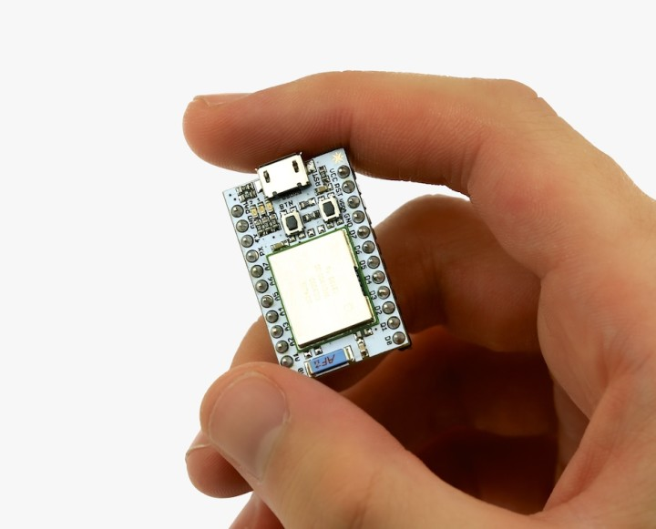
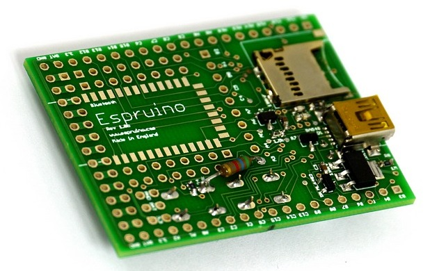
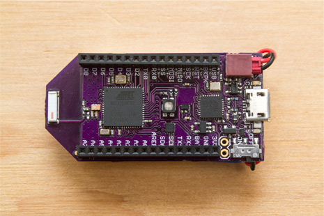
dc motor
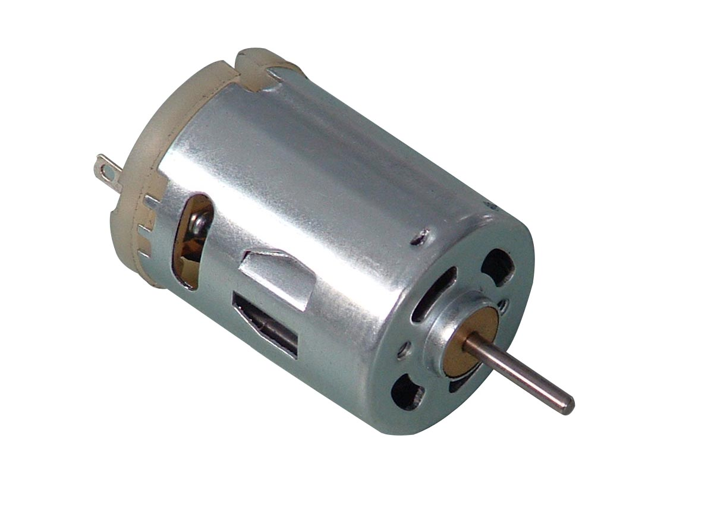
servo motor
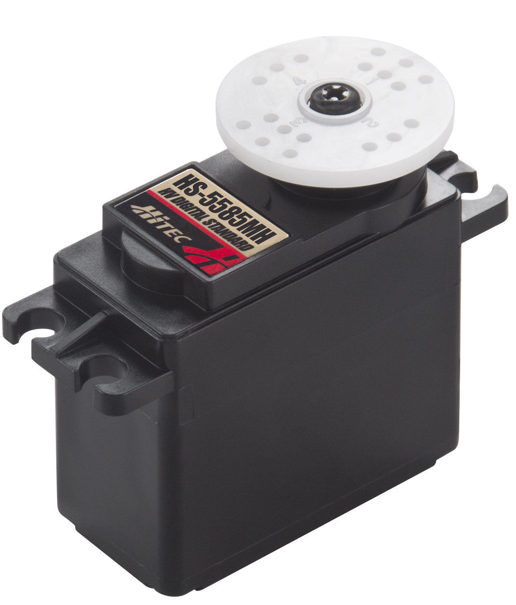

stepper motor
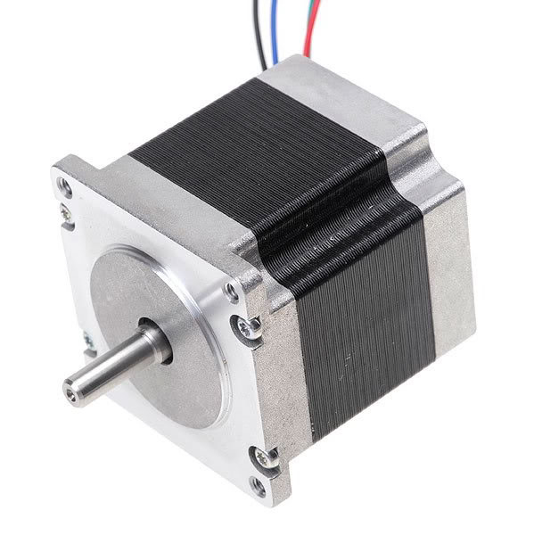
tank treads
bipedal robots
quadruped robots
robot gripper
linear actuator
microswitch
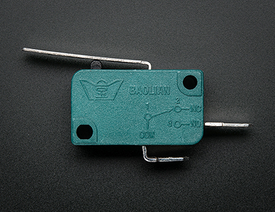
cameras
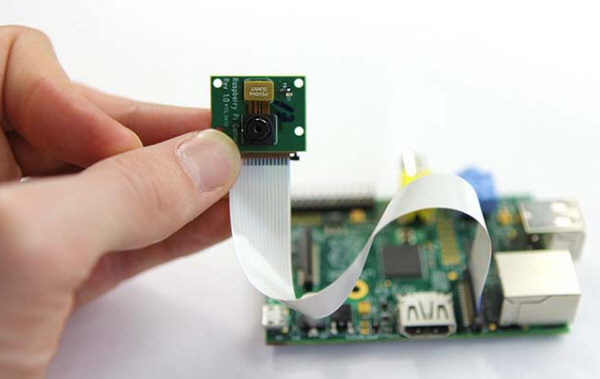
accelerometer
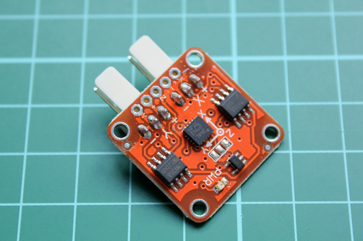
reflectance sensor
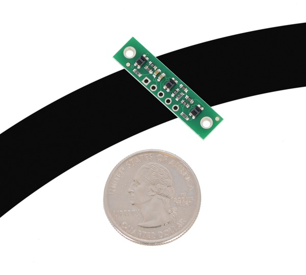
sonar rangefinder

gyroscope
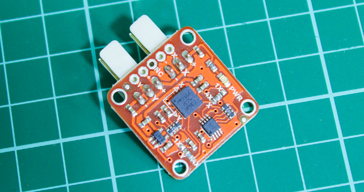
so what happens
at the workshop?
we will help you to
build your dreams.
(within limits, but we
can get you started!)
plus many cool and inspiring demos by us and you!
see you there.


 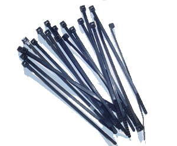
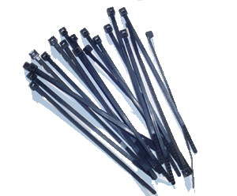